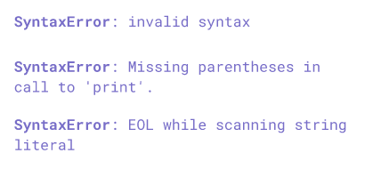

ICT - Year 7
Chapter 3: Computational Thinking: Programming Languages

Naypyitaw International Science Academy
What is an algorithm?
- An algorithm is a process to be followed in problem-solving operations.
- Algorithms contain very detailed instructions of every step needed to achieve a particular result.
What is a programming language?
- programming languages are a way of instructing a computer to do a certain task
- programming languages help translate our instructions into binary so that the computer can understand them
What is Python?
- Python is a high-level, general-purpose programming language.
- high-level: means it is easier to use than other programming languages
- general-purpose: means it can be used to make almost any kind of application
All programming languages, including Python, have syntax
Syntax is like the grammar for code
The computer cannot understand code without proper syntax
print("Hello") ### This is correct
print "Hello" ### This is not correct
Writing code without proper syntax leads to syntax errors

The Print Statement
The print() statement is used to show something to the user
For example, to show the words Hello, World! on the screen, we will write
print("Hello, World!")
You can join two pieces of text by using a $+$ sign
print("Hi, my name is " + "Amelia!")
You also can join two pieces of text together using a comma.
print("Hi, my name is" , "Amelia!")
The code above shows the text Hi, my name is Amelia
Notice that it adds a space in between
We can also assign some pieces of data a different name
These are called variables
user = "Claude"
print("Hello", user, "!", "It is nice to meet you.")
This will show Hello Claude ! It is nice to meet you.
number = 5
double = 2 * number
number = 15
What would be the value of the variables number and double after the code has finished running?
The input() function
When the input() function is called, the program pauses and waits for the user's input
print("What is your name?")
user = input()
print("Hello", user)
Here the text typed by the user is assigned to the variable called user
What would this code do?
print("Which is your favourite film?")
film = input()
print(film, "is my favourite film too!")
You can also shorten the code as
film = input("Which is your favourite film?")
print(film, "is my favourite film too!")
What would be the output of the code below?
lucky = 13
print("My lucky number is", lucky)
True or False: The code will always produce the same output whenever it is executed
What would be the output of the code below?
lucky = input("Enter a number")
print("My lucky number is", lucky)
True or False: The code will always produce the same output whenever it is executed
What would be the output of the code below?
days = 365
print(days, "days in a year")
This code prints 365 days in a year
What would be the output of the code below?
days = 7 * 31 + 4 * 30 + 28
print(days, "days in a year")
The code above is performing arithmetic operations
What would be the output of the code below?
days = 7 * 31 + 4 * 30 + 28
quad = days * 4 + 1
print("There are", quad, "days in four years")
What would be the output of the code below?
answer = 3 + 13 * 3
print("The answer is", answer)
Exercise: Write a program to ask the user to input some time in minutes and convert it to seconds.
minutes = input("Enter the time in minutes")
seconds = int(minutes) * 60
print(mintues, "minutes", "means", seconds, "seconds")
Exercise: Write a program to ask the user to input a time in seconds and convert it to minutes.
secs = int(input("Enter the time in seconds"))
mins = secs // 60
print(mins, "minutes", "in", secs, "seconds")
print("What is the best film ever?")
film = input()
if film != "kung fu panda":
print("Oh, I see!")
else:
print("That is my favourite film too!")
lucky = 13
print("Guess the number")
guess = int(input())
if guess == lucky:
print("Your guess was correct!")
else:
print("Wrong, keep trying")
### Task 0: Register a compiler
* Log in to your google account
* Go to *repl.it*
* Click **Sign Up** and sign up with your google account
* Fill in your first and last name
* Select **None** for experience and **For School** for purpose
* Select the **Starter** Plan (Free)
* From the top left option, select **Create Repl**
* Keep the template as **Python**, enter the title as *Task 1*
* Click **Next** through the introduction (read the tips)
* Whenever you start learning a programming language, you almost always start with a *Hello, world!* program.
* This is a very basic program that just tells the computer to show the words *Hello, world!* in the console.
* Doing this is a long-held tradition in any programming community.
* To tell the computer to show words on the screen using *python*, we use the **print()** function.
### Task 1: Hello World
print("Hello, world!")
* Type the above line in the code window
* Press **Ctrl-S** to save, and click the green **Run** button
* Observe the output in the console
### Exercise: Printing
print()
* Add the above line to your code
* Add a line to your program to show the words "I am going to take over the world!" in the console.
**Note:** Python runs code from top to bottom
### Exercise: Printing longer text
* Use the **print()** function to print longer pieces of text
* Type **\n** between some words to go to the next line.
**\n** is known as a *newline* character
### Task 3: Printing numbers and calculating
print(42)
print(3.14)
print(1 + 2)
print(7 - 5)
print(4 * 8)
print(10 / 5)
* Type out the above code
* Try to explain the result
### Task 4: Making a variable
message = "Hi, my name is"
print("message")
print(message)
print(message + "pranay")
message2 = "What is your name?"
print(message2 * 3)
* Type the above code in your code editor
* Explain the results
### Exercise: Chapter 2, Assignment 1
* Read the activity on page 41 and do reasearch on major malware attacks
* Write some paragraphs using the information you collected
* Use the print statement in python to display your paragraphs in the console
* Get your code reviewed and marked
**Note:** This exercise has marks so include good information
### Task 5: Using Variables
my_variable = 10
print(my_variable)
print(my_variable + 15)
print(my_variable * 20)
my_variable = 12
print(my_variable / 3)
my_variable = my_variable + 3
print(my_variable)
* Type out the above code in your editor
* Explain your results
### Task 6: Getting user input and comments
# Print "Hello, world!" on the screen:
print('Hello, world!')
# Get the user's name from their keyboard input:
name = input('What is your name? \n')
# Greet the user by their name:
print('Hello, ' + name)
* Type out the above code in your editor
* Explain your results
### Task 7: Converting celsius to fahrenheit
temp_in_celsius = int(input('Enter the temperature in celsius\n'))
temp_in_fahrenheit = (temp_in_celsius * 9)/5 + 32
print('The temperature in fahrenheit is ' + str(temp_in_fahrenheit))
* The formula for converting to fahrenheit is
$$ \text{fahrenheit} = \frac{9}{5} \times \text{celsius} + 32$$
* Using this formula, we can write the program shown above
* Explain your results
### Exercise: Convert fahrenheit to celsius
* The formula for converting fahrenheit to celsius is
$$ \text{celsius} = (\text{fahrenheit} - 32) \times \frac{5}{9}$$
* Write a python program to convert fahrenheit to celsius using the above formula
### Task 8: Text and Numbers
age = input('Enter your age\n')
age += 5
print("Your age after 5 years is: " + age)
* Type out the above code
* It will show a type error
* Fix the error
* Explain your results
### Task 9: Dice
import random
dice_roll = random.randint(1,6)
print("You rolled: ", dice_roll)
The above code will simulate a dice roll
### Task 10: Guess the number
import random
print("Hello, what is your name?")
name = input()
print("Okay, ", name , ", I am thinking of a number between 1 and 6.")
randomNumber = random.randint(1,6)
print("What number am I thinking of?")
guess = int(input())
if guess == randomNumber:
print("You are correct!")
else:
print("Wrong guess, the number I am thinking of is ", randomNumber)
* The **if** statement will execute some code if a condition is true
* If the condition is not true, the code in the **else** block will run
* Pay attention to the space at the start of the lines in the if and else statement. These are called **tabs**
Task 11: Age
age = int(input("Enter your age\n"))
if age < 18:
print("You cannot vote yet!")
else:
print("You can vote now!")
Task 11: Even or Odd
number = int(input("Enter a number\n"))
remainder = number % 2
if remainder == 0:
print(number, "is even")
else:
print(number, "is odd")
The % symbol will find the remainder after division by 2
### Exercise
* Write a program to ask the user to input their marks in a subject
* If the marks entered are above 90, say "You get A*"
* If the marks entered are above 80, say "You get A"
* If the marks entered are above 70, say "You get B"
* If the marks entered are above 60, say "You get C"
* If the marks entered are above 50, say "You get D"
### Task 11: Rerolling Dice
import random
keep_rolling = True
while keep_rolling:
dice_roll = random.randint(1,6)
print("You rolled: ", dice_roll)
roll_again = input("Do you want to roll again? (Y/N)\n")
if roll_again == 'N':
keep_rolling = False
* We can extend the previous code using a **while loop**
* **while loops** will keep doing the code under it as long as *the condition is true*
* An **if** statement will run the code under it *if the condition is true*